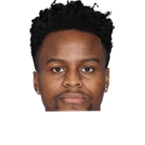
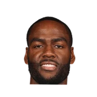

Dwain Price:Yogi Ferrell on Deron Williams:
“I know there’s always a business part of it. I love Deron. I learned some stuff from Deron.”

4 quotes from Yogi Ferrell about 3 other people around the NBA, newest first. Each one links to its original source.
Dwain Price:Yogi Ferrell on Deron Williams:
“I know there’s always a business part of it. I love Deron. I learned some stuff from Deron.”
Jason Anderson:Here's @Sacramento Kings guard Yogi Ferrell on new teammate Alec Burks:
“I just know that he attacks the rim, so I feel he'll fit in well with us with his ability to get in the paint and create.”
He said there are no hard feelings on either side, and that the decision revolved around his style of play.
“Mark Cuban, he was the one that gave me my first opportunity in the league,”

Alec Burks1 quoteJason Anderson:Here's @Sacramento Kings guard Yogi Ferrell on new teammate Alec Burks:
“I just know that he attacks the rim, so I feel he'll fit in well with us with his ability to get in the paint and create.”
He said there are no hard feelings on either side, and that the decision revolved around his style of play.
“Mark Cuban, he was the one that gave me my first opportunity in the league,”
Dwain Price:Yogi Ferrell on Deron Williams:
“I know there’s always a business part of it. I love Deron. I learned some stuff from Deron.”
Dwain Price:Yogi Ferrell on the #Mavs waiving Deron Williams:
“I'm a little bit shocked. He’s an All-Star guy. He's a great player.”